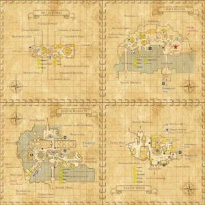

Level 75 reference · Zenith rules
|
 |

Walkthrough
- Talk to Alib-Mufalib who will give you the Key Item: Blue Sentinel Badge. He will tell you about his company, "Salaheem's Sentinels," which has been sanctioned by the Empire of Aht Urhgan and is currently recruiting new members.
- Check the badge to get coordinates for the people you should talk to in each area.
- You will know you've found the right person because you get an emote message: " <Your name>'s badge flashes brightly."
- After you talk to all of the people for Bastok, return to Alib-Mufalib to receive a Blue Invitation Card (key item).
You will need to talk to:
- Port Bastok (East to West)
- (J-5) Kaede (northernmost house)
- (F-5) Patient Wheel (north of Warehouse 2)
- (F-6) Paujean (bottom floor of Warehouse 2)
- (E-6) Hilda (Steaming Sheep Restaurant, walking on the top floor and occasionally walks down)
- (F-8) Tilian (end of a pier west of Air Travel Agency)
- Metalworks (all found on top floor)(Clockwise)
- (G-8) Raibaht (Cid's lab)
- (G-8) Invincible Shield (outside Cid's Lab)
- (G-7) Manilam (on top of Cermet Refinery)
- (I-8) Kaela (between Consulate of Windurst & Consulate of Jeuno)
- (K-7) Ayame (north Cannonry)
- Bastok Markets (East to West)
- (K-10) Harmodios (Harmodios's Music Shop)
- (J-10) Arawn (west of music store)
- (I-9) Horatius (Inside Trader's Home)
- (E-10) Ken (outside Mjoll's General Goods)
- (E-11) Pavel (West Gate to South Gustaberg)
- Bastok Mines (Clockwise, starting at Ore Street, upper floor to lower floor)
- (H-5) Griselda (upper floor, Bat's Lair Inn)
- (I-6) Goraow (upper floor, in stairwell of Ore Street)
- (I-7) Echo Hawk (lower floor, Ore Street)
- (H-6) Deidogg (lower floor, Ore Street)
- (H-9) Vaghron (southwest of South Auction House)
Once the quest is complete, you can warp to Aht Urhgan Whitegate by trading the quest starter 300 gil. Just doing this quest alone will not gain you access to Whitegate. You must do a quest in Jeuno and a quest in Tenshodo before this access will work.
Before you leave Whitegate for the 1st time, be sure to complete the second mission Aht Urhgan Mission 2: Immortal Sentries or you will have to take the ferry again...
Game Description
Client: Alib-Mufalib (Beligen Square, Port Bastok)
Summary:
- The mercenary company "Salaheem's Sentinels" has asked you to help recruit new members.
Adapted from Eden Wiki: Lure of the Wildcat (Bastok) · Contributors and history · CC BY-SA 4.0. Revision 44590. Layout, links and optional background text adapted for Zenith.